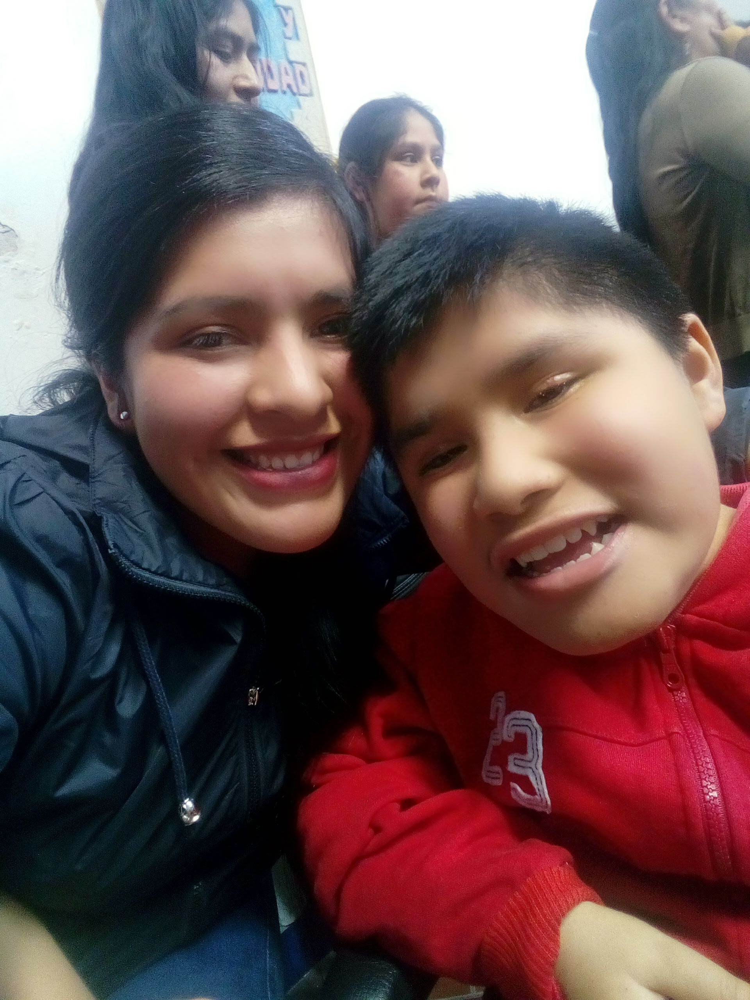
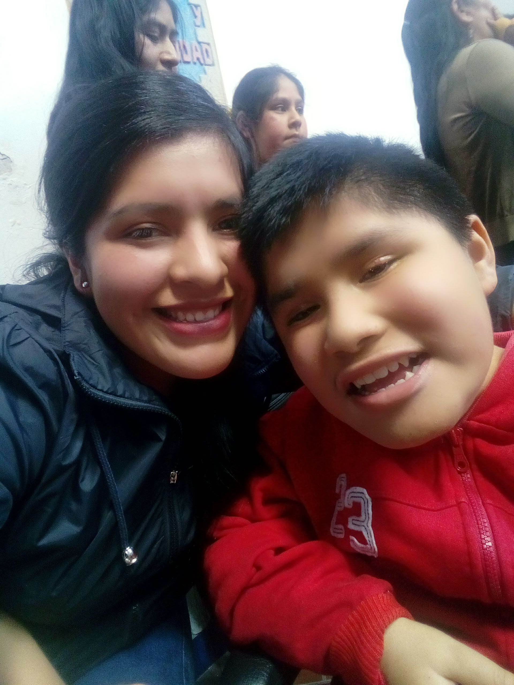

MI FAMILIA

Mi familia esta compuesta por mi mamá, mis hermanos Ronald y Daniel, mi hija Camila Belén, mis sobrinos Joaquin y Santiago y mi cuñada Alejandra
|  |  |
 |
 |
Mi familia esta compuesta por mi mamá, mis hermanos Ronald y Daniel, mi hija Camila Belén, mis sobrinos Joaquin y Santiago y mi cuñada Alejandra
|  | |
|
|